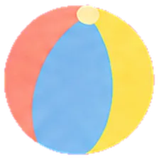
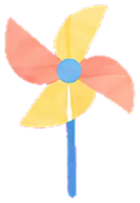
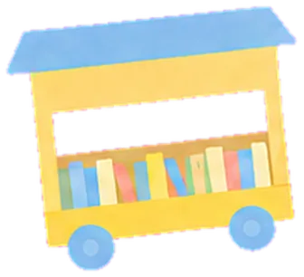
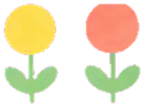

キャリコンへの道6つの段
ホーム › 3分ミニゲーム › ことばのキャッチボール


CATCH BALL
相談者役のモヤンと、チャットで8回やりとりします。上手に受けとめると、モヤンのこころの天気が晴れていくよ。面接(ロールプレイ)対策の素振りにもどうぞ。
きょうは、あなたがキャリアコンサルタント役。モヤンのことばを、やさしく受けとめてみてね。
き、きんちょうするけど…話してみるね。
あなたなら、なんて返す？
⚾ キャッチボール終了！ おつかれさま！
サニー先生「まず受けとめる→それから質問」。この順番は、論述にも面接にも効く基本の型だよ。
もう一回キャッチボールする 論述ボードゲームへ ▶︎
※ 相談のセリフと選択肢はすべて当サイトのオリジナルです。
試験対策マップにもどる ▶︎
ぜんぶのページを見る ▶︎


 キャリコン学びピクニック
キャリコン学びピクニック サニー先生
サニー先生
 モヤン
サニー先生
モヤン
モヤン
サニー先生
モヤン